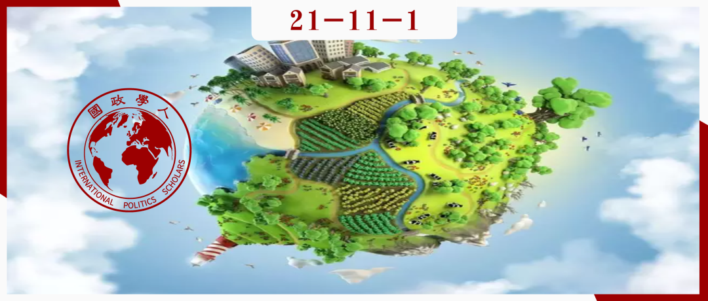

收录于合集 #《国际关系前沿》2021年第11期 18个

作品简介
作者： Dupuits Emilie，厄瓜多尔中央大学社会与人文科学学院职员。
编译： 陈想（国政学人编译员，对外经济贸易大学国际关系学院）
来源： Emilie, D., Reversing climatisation: Transnational grassroots networks and territorial security discourse in a fragmented global climate governance. International Politics , August 2021, http://dx.doi.org/10.1057/s41311-020-00256-2
归档： 《国际关系前沿》2021年第11期，总第38期。

内容摘要
2010年，中美洲人与森林合作组织（AMPB）于墨西哥坎昆国际气候会议期间成立，以游说承认领土权利，并将之视为全球应对气候变化的基本保障。其一方面寻求参与全球气候舞台，以便抓住这一背景所带来的广泛政治、经济机会；另一方面对国际有关“过度气候化”（over- climatisation）的争论的质疑担心这将淡化地方和原住民社区在森林保护和碳封存方面的积极历史作用。本文研究了跨国草根网络在COP21会议之前、期间和之后的动员战略。一个重要的结论是，在将领土安全问题置于气候议题中的尝试失败后，出现了一个逆气候化进程。
文章导读
01
引言
自2009年在哥本哈根举行的《联合国气候变化框架公约》第15次缔约方会议（COP15）以来，全球公民社会的动员程度大大增强。这种演变部分源于公民社会组织领导的各种抗议和倡导行动，其旨在提高自身话语权并谴责国家、国际非政府组织（INGO）和专家在这些领域的支配地位。另一个重要的范式转变是传统的国际非政府组织与跨国草根运动和公民社会组织之间的合作得到了扩展，这导致了新的气候运动和行动网络的出现。有人认为，这为国际气候谈判的民主化做出了重大贡献，例如，2007年在巴厘岛举行的第13次缔约方会议期间，创建了“减少毁林和森林退化所致碳排放（REDD+）”计划。该机制旨在通过财政激励措施进行森林碳汇保护。本文认为，原住民组织和社区林业组织已将REDD+作为一个为其主要优先行动——捍卫领土安全改善政治和财政资源的机会。此外，2010年绿色气候基金的创立也标志着这些行为体有机会增加其财政资源和决策参与过程的合法性。
本文对中美洲人与森林合作组织（AMPB）进行了案例研究，说明了在2015年巴黎气候大会（COP21）之前和期间，气候化框架策略的动员力度不断加大。AMPB由中美洲地区的原住民组织和社区林业组织组成。在COP21期间《巴黎协定》谈判带来更多挑战和机遇的情况下，AMPB逐步将其捍卫领土安全的战略转移到国际气候舞台上。在过去的几年里，领土安全已成为气候变化和森林保护国际话语的主要问题之一，即地方行为体控制其所拥有的领土、发展其基本生计和决定其发展道路的能力。（Larson et al. 2012)。
然而，气候机制复合体是高度分散的，并可能因竞争、边缘化或话语技术化阻碍或威胁草根运动（Orsini 2013;Zelli 2015）。由于参与国际舞台需要大量的资源和时间，跨国草根网络的国际参与也意味着与当地成员脱节的风险和合法性的丧失。
本文旨在研究跨国草根网络为将领土安全问题纳入国际气候舞台所采取的战略和框架，并填补现有文献中的一个空白，因为既有文献多侧重国际非政府组织的研究，而忽略跨国草根运动在气候领域的积极作用。此外，本文基于批判性话语分析，旨在确定关于领土安全的主要话语、涉及的权力关系、草根领导人动员它们的方式在国际气候舞台上的演变。
02
**参与森林和气候机制复合体的跨国草根网络
**
领土安全在国际气候议题中的地位日趋显著
森林保护问题在2007年REDD机制建立后逐渐被纳入国际气候辩论中。然而，REDD+最初被视为一个自上而下和集中化的项目，并导致了与地方和原住民社区的冲突，它们认为自己在决策过程中缺乏参与（Cronkleton et al. 2011; Schroeder, McDermott 2014）。自2008年以来，全球原住民领导人以“无权利，无REDD！“的口号表达了其对碳市场导向的担忧。2013年第十九次缔约方会议后，基于权利的框架开始应用于REDD+计划。REDD+和保有权保障以不同的方式相互影响。一方面，确保保有权有利于责任和利益的重新分配，以及土地掠夺风险的管控（McDermott et al. 2012）。另一方面，一些研究揭示了REDD+在存在明确国家法律框架的前提下，解决保有权保障问题的潜力（Larson et al. 2012）。气候机制的重要性不断增加，为AMPB的发展提供了机遇，该网络由墨西哥、危地马拉、洪都拉斯、尼加拉瓜、哥斯达黎加和巴拿马等十个国家或次国家组织组成，并将其行动集中在领土权利议程上。
跨国草根网络
在气候机制复合体碎片化背景下的策略
跨国草根网络的动员和协调工作是在机制复合体碎片化的背景下进行的，这影响了非国家行为体的准入和机会(Zelli 2015)。Biermann等人（2009: 16）将机制碎片化定义为“在性质（组织、制度和隐性规范）、支持者（公共的和私人的）、空间范围（从双边到多边），和主题（从具体的政策领域到普遍关注的问题）方面各不相同的国际机制的拼凑。”
在森林问题上，Giessen（2013）指出，存在一种机制复合体（Ongolo 2015），其特点是国家利益的分歧（Ongolo 2015），南北利益的分化，基于市场机制的新自由主义路径占主导地位（Cashore2002），以及非国家行为体的新兴力量（Arts and Buizer 2009）。一方面，机制碎片化会增进民间社会行为体进入国际舞台的机会（Biermann et al. 2009；Orsini et al. 2013）。另一方面，由于参与国际进程的行为体数量倍增以及由此产生对决策领域影响力的竞争和对边缘化行为体的排斥，机制碎片化成为一种制约因素（Rosendal 2001; Arts and Buizer 2009; Andonova and Mitchell 2010）。此外，跨国草根网络的国际参与会产生运动间的溢出效应（Hadden 2014）。面对国际参与的成本，各运动倾向于复制其他运动的策略和话语，以增加其共鸣和影响。
在机制碎片化的背景下，民间社会行为体可以部署不同的策略。第一种策略被称为“挑选法院”（forum-shopping）（Raus - tiala and Victor 2004; Orsini 2013）。这意味着行为体有能力根据其被接受程度和追求的目标，选择参与和宣传的舞台。第二种策略是“论坛连接”（forum- linking），当行为体为了自身利益，试图将曾冲突或不相干的领域连接起来时，就会出现这种策略。第三种策略是“论坛转移”（forum- shifting），指行为体试图利用不同领域之间存在的矛盾，从一个机制中退出，以专注于另一个更合适或提供更多政治机会的机制。这些策略以不同的方式与气候化进程相互作用，有助于跨国草根网络的策略和框架随着时间的推移不断变化。
03
COP21前领土安全话语的日益“气候化”
AMPB领导人在2015年巴黎气候大会（COP21）的背景下，将领土安全问题作为一个论坛连接战略，谴责国际机制在气候、生物多样性和原住民权利方面的矛盾。这使得 2010年《坎昆协议》在全球范围内得到认可，该协议确定了保障措施，以避免REDD+对生物多样性保护的潜在风险。最后，AMPB通过将领土安全问题从原住民权利领域定位到国际气候领域，明确采用“气候化”轨道和论坛连接战略，实现了议程的转移。
AMPB领导人对领土安全问题的关注可以被视为一种气候机会主义，即战略性利用REDD+计划和其他活跃于气候舞台的跨国原住民网络所带来的越来越多的机会。关于REDD+，COCIA（Coordinator of Indigenous Organisations of the Amazonian Basin，亚马逊流域原住民组织协调者）于2011年创建了自己的倡议——原住民亚马逊流域REDD（RIA）。其第一个目标是将气候变化减缓方案与国家公共政策结合起来，并使原住民有效地参与其中。第二个目标是资助原住民领土的所有权和保障过程，以及生活计划的制定或实现。第三个目标是编制除碳封存以外的生态系统服务指标，如文化习俗，作为森林碳汇的基础。
除了对“过度气候化”和国际舞台碎片化的批评之外，AMPB还利用REDD+和有关气候减缓的争论所带来的政治和经济机会，以捍卫领土安全问题。这是一个气候化过程，意味着战略性地利用气候机制以捍卫先前与气候议题无关的问题。然而，COP21会议期间国际社会的积极参与也揭示了一些对 “后2015议程”（即AMPB领导人将领土安全问题转移至其他领域）的限制。
04
面向区域舞台的“后2015议程”话语战略
本节讨论了COP21质疑AMPB保持国际参与的合法性和利益之后出现的批评和败象。对AMPB的国际参与提出质疑的一个主要限制条件在于COP21谈判结束时通过的《巴黎协定》的不足之处。事实上，该协定并没有充分提及原住民和领土权利，而仅在最后的协定（序言和第7.5条）中提到了“传统知识”。第2条中定义的协定目标本来提到了人权，包括原住民权利，却被删除了。AMPB在COP21期间的国际参与引发的另一个质疑是，很难将国际宣传和基金管理与来自草根的本土需求联系起来。此外，AMPB在国际基金管理方面也缺乏透明度和公平性。最后，一些批评来自于COCIA领导人，其对国际伙伴AMPB干涉跨国原住民网络的战略和行动提出了谴责。
为了应对先前暴露的失败和批评，AMPB的执行委员会战略性地确定了一个“后2015议程”，将COP21视为其国际参与的“终点”。一方面，后2015议程旨在确定作为优先事项的领土斗争，并在需要时为AMPB成员提供支持，其主要关注中美洲地区以及AMPB成员国在国家和地方层面的领土斗争。举例来说，危地马拉佩滕森林的社区特许权续期被定义为优先事项。另一方面，该议程显示了一种论坛转移战略，即从国际气候舞台转向提供新机会的其他国际舞台。例如，在墨西哥坎昆举行的《生物多样性公约》第13次缔约方会议（COP13）为AMPB提供了一个扩大领土安全问题宣传的机会。诚然，这种策略的转变是相对的，有时更侧重于话语。但AMPB的案例研究既揭示了气候化进程用以促进领土安全问题在国际范围内可见性的策略层面，又揭示了其面对气候舞台参与的反对和限制的可逆层面。
05
讨论与结论
在国际环境领域出现气候化进程之前，AMPB采取“挑选法院”的策略，根据不同的舞台及其对森林问题或原住民和领土权利的关注，调整其话语和行动；并在2014至2015年期间，将宣传重点放在COP21上，采取“论坛连接”的策略，侧重于领土安全问题，作为处理气候、生物多样性和原住民权利机制之间可能出现的负面重叠的保障。出于《巴黎协定》在涵盖领土安全问题方面的局限性，以及地方行为体直接利益的缺失，AMPB的领导人创建了“后2015议程”，以便将努力集中在区域舞台上，并利用在墨西哥举行的生物多样性国际会议的机会。 气候机制复合体的碎片化解释了行为体的国际动员的连续性和断裂性。本文的分析也表明气候化的周期性维度及其在应对碎片化方面的局限性。这可以通过气候化的减弱——至少在话语上地，看出跨国草根网络逐渐脱离气候谈判，转向更加区域化的舞台进行领土斗争。
气候化的进程是通过不同的动力发生的，并对跨国草根网络产生不同的影响。一方面，通过有选择地将领土安全框架纳入气候谈判，APMB采取了有效的策略。另一方面，AMPB所面临的批评和障碍使其领导人放慢甚至扭转了气候化进程的趋势，把注意力重新放在区域和领土的优先事项上。
COP21既代表了公民社会组织参与国际气候舞台的积极范式转变，也构成了其参与领土斗争的挑战和风险。这种平衡的现实使跨国草根领袖根据时间和空间不断调整其策略和框架。因此，一个成功的气候化策略可能与在适当的时间使用它，并在最初的主张和定义的框架失去基础之前逆转它的能力有关。
译者评述
本文聚焦全球气候治理中的“逆向”政治力量，通过草根关系网络以及领土安全关切，探讨气候治理中的逆向运动。文章进一步分析了跨国草根网络动员的战略和框架，以便在气候制度复合体碎片化的背景下定位领土安全问题。围绕COP21所阐述的论坛联系和论坛转移两个主要战略，文章填补了跨国草根网络的积极作用的文献空白。
气候制度的中心地位不断提高，主要源于2015年COP21会议的召开。这使AMPB的行动越来越集中在气候领域。2014和2015年期间，AMPB领导人采用“论坛连接”的策略将宣传导向了COP21，此举被认为是处理气候、生物多样性和原住民权利可能出现的负面重叠的唯一保障。此外，领土安全框架因其所引发的国际广泛共鸣而被战略性地使用。
2015年后，AMPB开始转向区域性舞台，这部分由于《巴黎协定》在涵盖领土安全问题方面的局限性，以及地方行为体直接利益的缺乏。一方面，《巴黎协定》没有按照森林守护者联盟的要求，完全纳入领土权问题。另一方面，AMPB成为了各种批评的对象。AMPB领导人为此制定了“后2015议程”，以便以国际会议为依托专注于区域性事务。
全球气候治理发展至今已有近五十年历史，自20世纪70年代以来，国际社会对气候变化问题的关注度与日俱增，1992年签署的《联合国气候变化框架公约》（UNFCCC）则进一步为各国应对气候变化的国际合作奠定了基础。在“共同但有区别的责任”原则以及尊重发展中国家国情和需要原则的基础上，UNFCCC通过协商谈判，进一步细化了应对气候变化的减缓与适应、资金来源、技术转移、透明度及审查等方面的机制安排。[1]
基于人类社会绿色发展需求，中国从传统思想的“一体之仁”、正当性原则、适宜性原则以及“己所不欲，勿施于人”的观念出发，构建起具有中国特色的全球气候治理观。[2]中共十九大报告指出，中国“引导气候变化国际合作，成为全球生态文明建设的重要参与者、贡献者和引领者”。2021年4月22日，习近平在北京以视频方式出席领导人气候峰会，并发表题为《共同构建人与自然生命共同体》的讲话，呼吁世界形成“你中有我，我中有你”的共荣性价值理念。在昆明召开的联合国《生物多样性公约》缔约方大会进一步凸显了环境保护领域国际合作的必要性，也为应对气候变化的中国治理方案的提出提供了契机。
参考文献
[1]薄燕：《<巴黎协定>坚持的“共区原则”与国际气候治理机制的变迁》，载《气候变化研究进展》2016年第3期，第243-250页。
[2]薄燕：《中国全球气候治理观的要义、基础与实践》，载《当代世界》2019年第12期，第50-56页。
词汇整理
中美洲人与森林合作组织 AMPB
“过度气候化” over-climatisation
哥本哈根《联合国气候变化框架公约》第15次缔约方会议 COP15
减少毁林和森林退化所致碳排放计划 REDD+
责编 | 杨佳霖 陈思涵
排版 | 石寒冰 方引弓
文章观点不代表本平台观点，本平台评译分享的文章均出于专业学习之用, 不以任何盈利为目的，内容主要呈现对原文的介绍，原文内容请通过各高校购买的数据库自行下载。